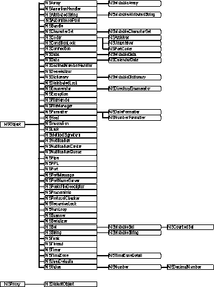

Header File Directories:
NextLibrary/Frameworks/Foundation.framework/Headers
The Foundation Framework introduces several paradigms to avoid confusion in common situations, and to introduce a level of consistency across class hierarchies. This is done with some standard policies, such as that for object ownership (that is, who is responsible for disposing of objects), and with abstract classes like NSEnumerator. These new paradigms reduce the number of special and exceptional cases in API and allow you to code more efficiently by reusing the same mechanisms with various kinds of objects.
Figure 1
The Foundation Framework class hierarchy 
Many of these classes have closely related functionality:
Data storage. NSData and NSString provide object-oriented storage for arrays of bytes. NSValue and NSNumber provide object-oriented storage for arrays of simple C data values. NSArray, NSDictionary, NSPPL, and NSSet provide storage for Objective-C objects of any class.
Text and strings. NSCharacterSet represents various groupings of characters which are used by the NSString and NSScanner classes. The NSString classes represent text strings and provide methods for searching, combining, and comparing strings. An NSScanner object is used to scan numbers and words from an NSString object.
Dates and times. The NSDate and NSTimeZone classes store times and dates. They offer methods for calculating date and time differences, for displaying dates and times in many formats, and for adjusting times and dates based on location in the world.
Application coordination and timing. NSNotification, NSNotificationCenter, and NSNotificationQueue provide systems that an object can use to notify all interested observers of changes that occur. You can use a NSTimer object to send a message to another object at specific intervals.
Object creation and disposal. NSAutoreleasePools are used to implement the delayed-release feature of the Foundation Framework.
Object distribution and persistence. The data that an object contains can be represented in an architecture-independent way using NSSerializer. The NSCoder and its subclasses take this process a step further by allowing class information to be stored along with the data. The resulting representations are used for archiving and for object distribution.
Operating system services. Several classes are designed to insulate you from the idiosynccracies of various operating systems. NSFileManager provides a consistent interface for file operations (creating, renaming, deleting, and so on). NSThread and NSProcessInfo let you create multi-threaded applications and query the environment in which an application runs.